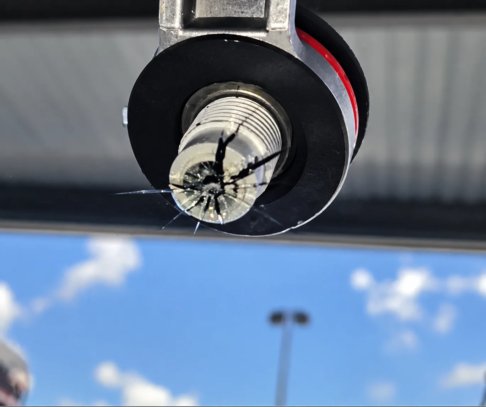
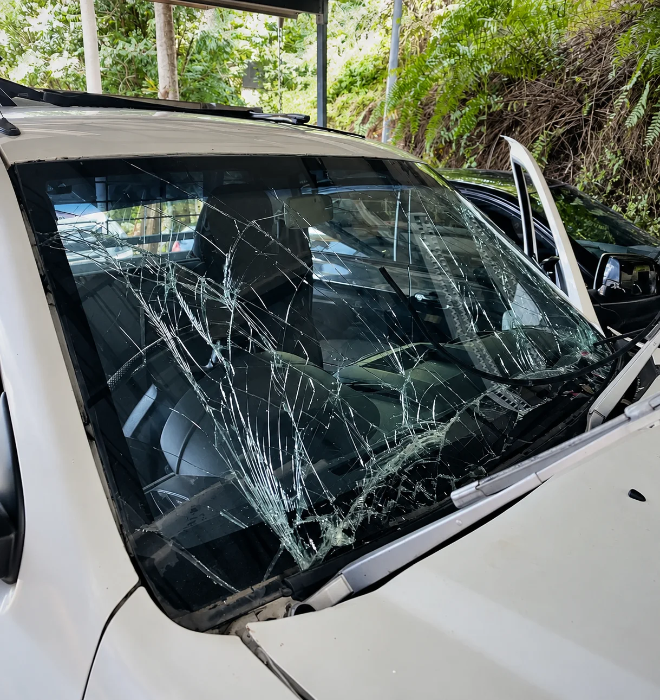

Chip repair · Cairns
Stone chip
repair
A small chip today can become a long crack tomorrow. Get it looked at early and you may be able to keep your original windscreen.
Chip repair
Fix it before
it spreads
Heat, bumps and temperature changes can turn a small stone chip into a crack that runs across the windscreen. Repairing it early is usually quicker than replacing the whole screen.
Send Frank a photo and he’ll tell you whether the chip can be repaired.
- Send a photo first — no guessing
- Repair keeps your original windscreen when possible
- If it can’t be repaired, we’ll talk you through a replacement

How it works
Quick and simple
Snap the chip
Take a clear photo of the chip with a coin next to it for size.
Text Frank
Send it to 0431 185 183 with your vehicle details.
Repair
The chip is cleaned and filled at our workshop.
Back on the road
Your glass is checked before you drive away.
Questions
Good to know
Can every chip be repaired?
Not always. Size, depth and position all matter — especially chips in the driver’s view or near the edge. A photo is the fastest way to find out.
What if I wait?
Chips can spread with heat and vibration. The sooner it’s seen, the better the chance of a repair instead of a new windscreen.
Where do I bring the car?
209 Bunda Street, Parramatta Park, Cairns — next to Lifeline.
More from Frank
Other services
Got a chip?
Call or text Frank with your vehicle and a photo of the damage.